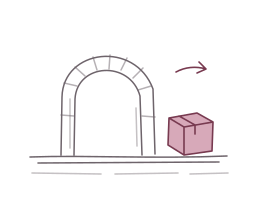

Connecting to your agent
Your build machine
Builds run in the background, even after you close this window.
Connect your script
Send your source. Let this machine take it from here.
Builds run in the background, even after you close this window.
Connect your script
Flutter, C++ tools, and packaging. Prepared once, reused for every build.
The first setup may ask for Windows administrator approval.
No setup activity yet.
Signed updates arrive in the background and install when your builds are finished.
Your work always comes first.
Follow a running job or pick up a failed upload.
Your source travels directly from your script to this machine.
Use a local network or VPN address your other computer can reach. Allow TCP port 8743 through Windows Firewall on your private network.
Anyone with this key can submit builds to this PC.
Your script checks this fingerprint before sending the key or any files.
These connection settings are enough to build and download results. Add S3 or GitHub credentials only when you choose external publication.
KILNBRIDGE_URL="your agent address" KILNBRIDGE_KEY="your access key" KILNBRIDGE_PIN_SHA256="your certificate fingerprint"
A few preferences, then back to your work.
Finish or cancel accepted builds first. Open Kilnbridge again to resume. Your startup preference is kept.